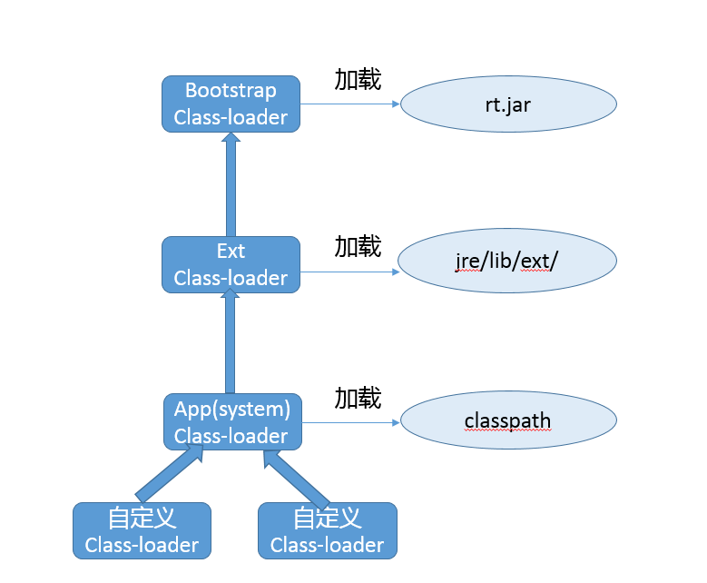
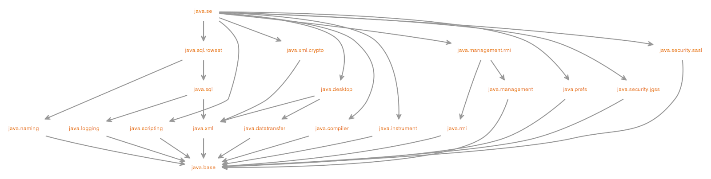
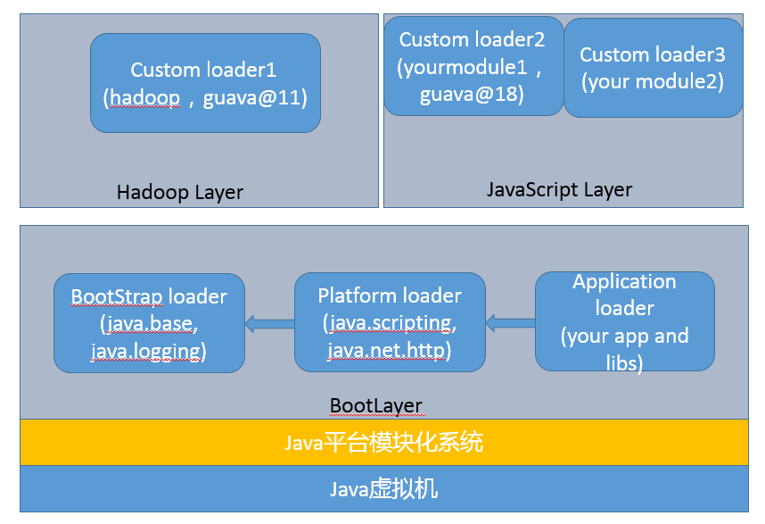

- 00 开篇词 以面试题为切入点，有效提升你的Java内功.md
- 01 谈谈你对Java平台的理解？.md
- 02 Exception和Error有什么区别？.md
- 03 谈谈final、finally、 finalize有什么不同？.md
- 04 强引用、软引用、弱引用、幻象引用有什么区别？.md
- 05 String、StringBuffer、StringBuilder有什么区别？.md
- 06 动态代理是基于什么原理？.md
- 07 int和Integer有什么区别？.md
- 08 对比Vector、ArrayList、LinkedList有何区别？.md
- 09 对比Hashtable、HashMap、TreeMap有什么不同？.md
- 10 如何保证集合是线程安全的_ ConcurrentHashMap如何实现高效地线程安全？.md
- 11 Java提供了哪些IO方式？ NIO如何实现多路复用？.md
- 12 Java有几种文件拷贝方式？哪一种最高效？.md
- 13 谈谈接口和抽象类有什么区别？.md
- 14 谈谈你知道的设计模式？.md
- 15 synchronized和ReentrantLock有什么区别呢？.md
- 16 synchronized底层如何实现？什么是锁的升级、降级？.md
- 17 一个线程两次调用start()方法会出现什么情况？.md
- 18 什么情况下Java程序会产生死锁？如何定位、修复？.md
- 19 Java并发包提供了哪些并发工具类？.md
- 20 并发包中的ConcurrentLinkedQueue和LinkedBlockingQueue有什么区别？.md
- 21 Java并发类库提供的线程池有哪几种？ 分别有什么特点？.md
- 22 AtomicInteger底层实现原理是什么？如何在自己的产品代码中应用CAS操作？.md
- 23 请介绍类加载过程，什么是双亲委派模型？.md
- 24 有哪些方法可以在运行时动态生成一个Java类？.md
- 25 谈谈JVM内存区域的划分，哪些区域可能发生OutOfMemoryError_.md
- 26 如何监控和诊断JVM堆内和堆外内存使用？.md
- 27 Java常见的垃圾收集器有哪些？.md
- 28 谈谈你的GC调优思路_.md
- 29 Java内存模型中的happen-before是什么？.md
- 30 Java程序运行在Docker等容器环境有哪些新问题？.md
- 31 你了解Java应用开发中的注入攻击吗？.md
- 32 如何写出安全的Java代码？.md
- 33 后台服务出现明显“变慢”，谈谈你的诊断思路？.md
- 34 有人说“Lambda能让Java程序慢30倍”，你怎么看？.md
- 35 JVM优化Java代码时都做了什么？.md
- 36 谈谈MySQL支持的事务隔离级别，以及悲观锁和乐观锁的原理和应用场景？.md
- 37 谈谈Spring Bean的生命周期和作用域？.md
- 38 对比Java标准NIO类库，你知道Netty是如何实现更高性能的吗？.md
- 39 谈谈常用的分布式ID的设计方案？Snowflake是否受冬令时切换影响？.md
- 周末福利 谈谈我对Java学习和面试的看法.md
- 结束语 技术没有终点.md
23 请介绍类加载过程，什么是双亲委派模型？
Java通过引入字节码和JVM机制，提供了强大的跨平台能力，理解Java的类加载机制是深入Java开发的必要条件，也是个面试考察热点。
今天我要问你的问题是，请介绍类加载过程，什么是双亲委派模型？
典型回答
一般来说，我们把Java的类加载过程分为三个主要步骤：加载、链接、初始化，具体行为在Java虚拟机规范里有非常详细的定义。
首先是加载阶段（Loading），它是Java将字节码数据从不同的数据源读取到JVM中，并映射为JVM认可的数据结构（Class对象），这里的数据源可能是各种各样的形态，如jar文件、class文件，甚至是网络数据源等；如果输入数据不是ClassFile的结构，则会抛出ClassFormatError。
加载阶段是用户参与的阶段，我们可以自定义类加载器，去实现自己的类加载过程。
第二阶段是链接（Linking），这是核心的步骤，简单说是把原始的类定义信息平滑地转化入JVM运行的过程中。这里可进一步细分为三个步骤：
-
验证（Verification），这是虚拟机安全的重要保障，JVM需要核验字节信息是符合Java虚拟机规范的，否则就被认为是VerifyError，这样就防止了恶意信息或者不合规的信息危害JVM的运行，验证阶段有可能触发更多class的加载。
-
准备（Preparation），创建类或接口中的静态变量，并初始化静态变量的初始值。但这里的“初始化”和下面的显式初始化阶段是有区别的，侧重点在于分配所需要的内存空间，不会去执行更进一步的JVM指令。
-
解析（Resolution），在这一步会将常量池中的符号引用（symbolic reference）替换为直接引用。在Java虚拟机规范中，详细介绍了类、接口、方法和字段等各个方面的解析。
最后是初始化阶段（initialization），这一步真正去执行类初始化的代码逻辑，包括静态字段赋值的动作，以及执行类定义中的静态初始化块内的逻辑，编译器在编译阶段就会把这部分逻辑整理好，父类型的初始化逻辑优先于当前类型的逻辑。
再来谈谈双亲委派模型，简单说就是当类加载器（Class-Loader）试图加载某个类型的时候，除非父加载器找不到相应类型，否则尽量将这个任务代理给当前加载器的父加载器去做。使用委派模型的目的是避免重复加载Java类型。
考点分析
今天的问题是关于JVM类加载方面的基础问题，我前面给出的回答参考了Java虚拟机规范中的主要条款。如果你在面试中回答这个问题，在这个基础上还可以举例说明。
我们来看一个经典的延伸问题，准备阶段谈到静态变量，那么对于常量和不同静态变量有什么区别？
需要明确的是，没有人能够精确的理解和记忆所有信息，如果碰到这种问题，有直接答案当然最好；没有的话，就说说自己的思路。
我们定义下面这样的类型，分别提供了普通静态变量、静态常量，常量又考虑到原始类型和引用类型可能有区别。
public class CLPreparation {
public static int a = 100;
public static final int INT_CONSTANT = 1000;
public static final Integer INTEGER_CONSTANT = Integer.valueOf(10000);
}
编译并反编译一下：
Javac CLPreparation.java
Javap –v CLPreparation.class
可以在字节码中看到这样的额外初始化逻辑：
0: bipush 100
2: putstatic #2 // Field a:I
5: sipush 10000
8: invokestatic #3 // Method java/lang/Integer.valueOf:(I)Ljava/lang/Integer;
11: putstatic #4 // Field INTEGER_CONSTANT:Ljava/lang/Integer;
这能让我们更清楚，普通原始类型静态变量和引用类型（即使是常量），是需要额外调用putstatic等JVM指令的，这些是在显式初始化阶段执行，而不是准备阶段调用；而原始类型常量，则不需要这样的步骤。
关于类加载过程的更多细节，有非常多的优秀资料进行介绍，你可以参考大名鼎鼎的《深入理解Java虚拟机》，一本非常好的入门书籍。我的建议是不要仅看教程，最好能够想出代码实例去验证自己对某个方面的理解和判断，这样不仅能加深理解，还能够在未来的应用开发中使用到。
其实，类加载机制的范围实在太大，我从开发和部署的不同角度，各选取了一个典型扩展问题供你参考：
-
如果要真正理解双亲委派模型，需要理解Java中类加载器的架构和职责，至少要懂具体有哪些内建的类加载器，这些是我上面的回答里没有提到的；以及如何自定义类加载器？
-
从应用角度，解决某些类加载问题，例如我的Java程序启动较慢，有没有办法尽量减小Java类加载的开销？
另外，需要注意的是，在Java 9中，Jigsaw项目为Java提供了原生的模块化支持，内建的类加载器结构和机制发生了明显变化。我会对此进行讲解，希望能够避免一些未来升级中可能发生的问题。
知识扩展
首先，从架构角度，一起来看看Java 8以前各种类加载器的结构，下面是三种Oracle JDK内建的类加载器。
- 启动类加载器（Bootstrap Class-Loader），加载 jre/lib下面的jar文件，如rt.jar。它是个超级公民，即使是在开启了Security Manager的时候，JDK仍赋予了它加载的程序AllPermission。
对于做底层开发的工程师，有的时候可能不得不去试图修改JDK的基础代码，也就是通常意义上的核心类库，我们可以使用下面的命令行参数。
# 指定新的bootclasspath，替换java.*包的内部实现
java -Xbootclasspath:<your_boot_classpath> your_App
# a意味着append，将指定目录添加到bootclasspath后面
java -Xbootclasspath/a:<your_dir> your_App
# p意味着prepend，将指定目录添加到bootclasspath前面
java -Xbootclasspath/p:<your_dir> your_App
用法其实很易懂，例如，使用最常见的 “/p”，既然是前置，就有机会替换个别基础类的实现。
我们一般可以使用下面方法获取父加载器，但是在通常的JDK/JRE实现中，扩展类加载器getParent()都只能返回null。
public final ClassLoader getParent()
-
扩展类加载器（Extension or Ext Class-Loader），负责加载我们放到jre/lib/ext/目录下面的jar包，这就是所谓的extension机制。该目录也可以通过设置 “java.ext.dirs”来覆盖。
java -Djava.ext.dirs=your_ext_dir HelloWorld
-
应用类加载器（Application or App Class-Loader），就是加载我们最熟悉的classpath的内容。这里有一个容易混淆的概念，系统（System）类加载器，通常来说，其默认就是JDK内建的应用类加载器，但是它同样是可能修改的，比如：
java -Djava.system.class.loader=com.yourcorp.YourClassLoader HelloWorld
如果我们指定了这个参数，JDK内建的应用类加载器就会成为定制加载器的父亲，这种方式通常用在类似需要改变双亲委派模式的场景。
具体请参考下图：

至于前面被问到的双亲委派模型，参考这个结构图更容易理解。试想，如果不同类加载器都自己加载需要的某个类型，那么就会出现多次重复加载，完全是种浪费。
通常类加载机制有三个基本特征：
-
双亲委派模型。但不是所有类加载都遵守这个模型，有的时候，启动类加载器所加载的类型，是可能要加载用户代码的，比如JDK内部的ServiceProvider/ServiceLoader机制，用户可以在标准API框架上，提供自己的实现，JDK也需要提供些默认的参考实现。 例如，Java 中JNDI、JDBC、文件系统、Cipher等很多方面，都是利用的这种机制，这种情况就不会用双亲委派模型去加载，而是利用所谓的上下文加载器。
-
可见性，子类加载器可以访问父加载器加载的类型，但是反过来是不允许的，不然，因为缺少必要的隔离，我们就没有办法利用类加载器去实现容器的逻辑。
-
单一性，由于父加载器的类型对于子加载器是可见的，所以父加载器中加载过的类型，就不会在子加载器中重复加载。但是注意，类加载器“邻居”间，同一类型仍然可以被加载多次，因为互相并不可见。
在JDK 9中，由于Jigsaw项目引入了Java平台模块化系统（JPMS），Java SE的源代码被划分为一系列模块。

类加载器，类文件容器等都发生了非常大的变化，我这里总结一下：
- 前面提到的-Xbootclasspath参数不可用了。API已经被划分到具体的模块，所以上文中，利用“-Xbootclasspath/p”替换某个Java核心类型代码，实际上变成了对相应的模块进行的修补，可以采用下面的解决方案：
首先，确认要修改的类文件已经编译好，并按照对应模块（假设是java.base）结构存放， 然后，给模块打补丁：
java --patch-module java.base=your_patch yourApp
-
扩展类加载器被重命名为平台类加载器（Platform Class-Loader），而且extension机制则被移除。也就意味着，如果我们指定java.ext.dirs环境变量，或者lib/ext目录存在，JVM将直接返回错误！建议解决办法就是将其放入classpath里。
-
部分不需要AllPermission的Java基础模块，被降级到平台类加载器中，相应的权限也被更精细粒度地限制起来。
-
rt.jar和tools.jar同样是被移除了！JDK的核心类库以及相关资源，被存储在jimage文件中，并通过新的JRT文件系统访问，而不是原有的JAR文件系统。虽然看起来很惊人，但幸好对于大部分软件的兼容性影响，其实是有限的，更直接地影响是IDE等软件，通常只要升级到新版本就可以了。
-
增加了Layer的抽象， JVM启动默认创建BootLayer，开发者也可以自己去定义和实例化Layer，可以更加方便的实现类似容器一般的逻辑抽象。
结合了Layer，目前的JVM内部结构就变成了下面的层次，内建类加载器都在BootLayer中，其他Layer内部有自定义的类加载器，不同版本模块可以同时工作在不同的Layer。

谈到类加载器，绕不过的一个话题是自定义类加载器，常见的场景有：
-
实现类似进程内隔离，类加载器实际上用作不同的命名空间，以提供类似容器、模块化的效果。例如，两个模块依赖于某个类库的不同版本，如果分别被不同的容器加载，就可以互不干扰。这个方面的集大成者是Java EE和OSGI、JPMS等框架。
-
应用需要从不同的数据源获取类定义信息，例如网络数据源，而不是本地文件系统。
-
或者是需要自己操纵字节码，动态修改或者生成类型。
我们可以总体上简单理解自定义类加载过程：
-
通过指定名称，找到其二进制实现，这里往往就是自定义类加载器会“定制”的部分，例如，在特定数据源根据名字获取字节码，或者修改或生成字节码。
-
然后，创建Class对象，并完成类加载过程。二进制信息到Class对象的转换，通常就依赖defineClass，我们无需自己实现，它是final方法。有了Class对象，后续完成加载过程就顺理成章了。
具体实现我建议参考这个用例。
我在[专栏第1讲]中，就提到了由于字节码是平台无关抽象，而不是机器码，所以Java需要类加载和解释、编译，这些都导致Java启动变慢。谈了这么多类加载，有没有什么通用办法，不需要代码和其他工作量，就可以降低类加载的开销呢？
这个，可以有。
-
在第1讲中提到的AOT，相当于直接编译成机器码，降低的其实主要是解释和编译开销。但是其目前还是个试验特性，支持的平台也有限，比如，JDK 9仅支持Linux x64，所以局限性太大，先暂且不谈。
-
还有就是较少人知道的AppCDS（Application Class-Data Sharing），CDS在Java 5中被引进，但仅限于Bootstrap Class-loader，在8u40中实现了AppCDS，支持其他的类加载器，在目前2018年初发布的JDK 10中已经开源。
简单来说，AppCDS基本原理和工作过程是：
首先，JVM将类信息加载， 解析成为元数据，并根据是否需要修改，将其分类为Read-Only部分和Read-Write部分。然后，将这些元数据直接存储在文件系统中，作为所谓的Shared Archive。命令很简单：
Java -Xshare:dump -XX:+UseAppCDS -XX:SharedArchiveFile=<jsa> \
-XX:SharedClassListFile=<classlist> -XX:SharedArchiveConfigFile=<config_file>
第二，在应用程序启动时，指定归档文件，并开启AppCDS。
Java -Xshare:on -XX:+UseAppCDS -XX:SharedArchiveFile=<jsa> yourApp
通过上面的命令，JVM会通过内存映射技术，直接映射到相应的地址空间，免除了类加载、解析等各种开销。
AppCDS改善启动速度非常明显，传统的Java EE应用，一般可以提高20%~30%以上；实验中使用Spark KMeans负载，20个slave，可以提高11%的启动速度。
与此同时，降低内存footprint，因为同一环境的Java进程间可以共享部分数据结构。前面谈到的两个实验，平均可以减少10%以上的内存消耗。
当然，也不是没有局限性，如果恰好大量使用了运行时动态类加载，它的帮助就有限了。
今天我梳理了一下类加载的过程，并针对Java新版中类加载机制发生的变化，进行了相对全面的总结，最后介绍了一个改善类加载速度的特性，希望对你有所帮助。
一课一练
关于今天我们讨论的题目你做到心中有数了吗？今天的思考题是，谈谈什么是Jar Hell问题？你有遇到过类似情况吗，如何解决呢？
请你在留言区写写你对这个问题的思考，我会选出经过认真思考的留言，送给你一份学习奖励礼券，欢迎你与我一起讨论。
你的朋友是不是也在准备面试呢？你可以“请朋友读”，把今天的题目分享给好友，或许你能帮到他。
© 2019 - 2023 Liangliang Lee. Powered by Vert.x and hexo-theme-book.